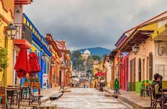

Chiapas: Un Paraíso Escondido en México

Desvela los misterios de Chiapas
Chiapas es un estado que te cautivará con su exuberante naturaleza, su rica historia y su diversidad cultural. Desde las majestuosas cascadas hasta las antiguas ciudades mayas, Chiapas te ofrece una experiencia única y memorable.
¿Qué no te puedes perder?
San Cristóbal de las Casas:
Adéntrate en el corazón de la cultura chiapaneca. Explora sus calles empedradas, visita sus coloridos mercados y conoce las tradiciones de los pueblos indígenas.
Zonas Arqueológicas:
Descubre las antiguas ciudades mayas de Palenque, Bonampak y Yaxchilán. Admira la belleza arquitectónica y la complejidad de estas civilizaciones.
Cañón del Sumidero: /h4>
Navega por este impresionante cañón y maravíllate con sus paredes verticales que se elevan cientos de metros.
Cascadas de Agua Azul:
Refréscate en las cristalinas aguas de estas cascadas y sumérgete en la belleza de la selva.
Pueblos Mágicos:
Visita los encantadores pueblos de Chiapa de Corzo, Comitán y San Cristóbal de las Casas, y descubre su rica historia y tradiciones.
¿Por qué visitar Chiapas?
Naturaleza exuberante:
SExplora selvas, montañas, ríos y lagos. Observa una gran variedad de flora y fauna.
Cultura viva:
Conoce las tradiciones de los pueblos indígenas, como los tzotziles y tzeltales, y disfruta de sus artesanías y gastronomía.
Aventura:
Practica senderismo, rappel, kayak, buceo y muchas otras actividades al aire libre.
Espiritualidad:
Conecta con la naturaleza y encuentra paz interior en los lugares sagrados de Chiapas.